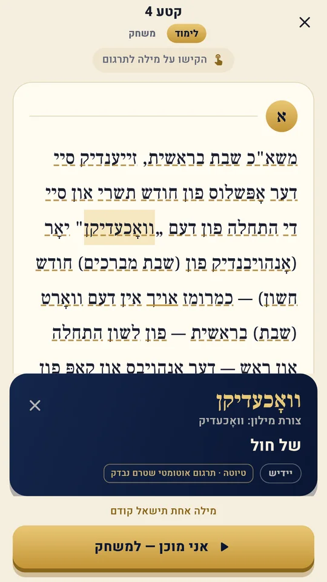
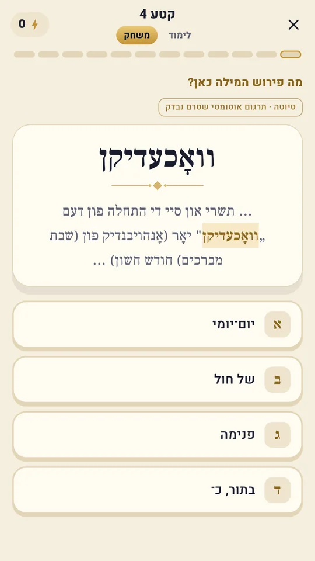
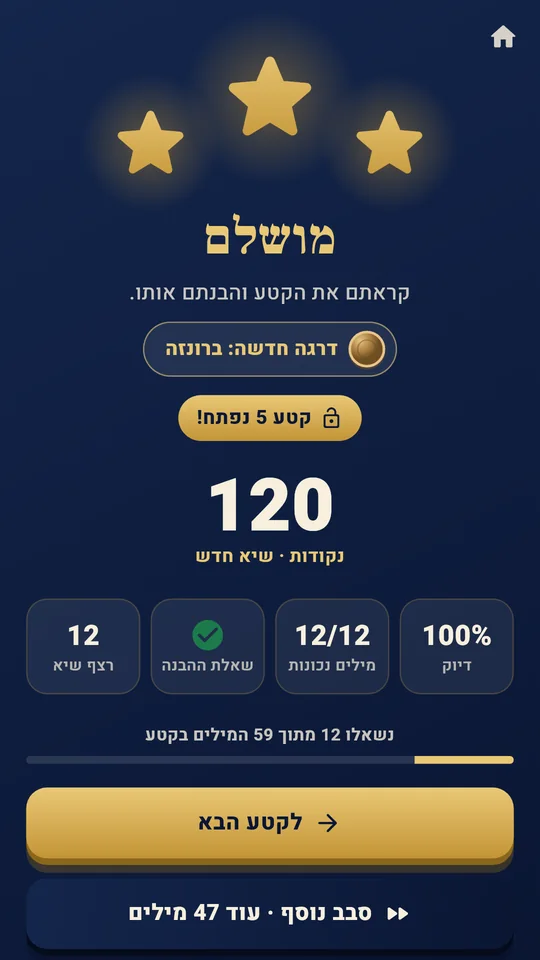
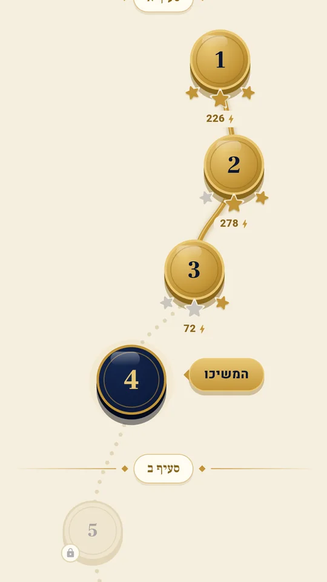

לקרוא שיחה ביידיש, ולהבין אותה.
מקישים על מילה ורואים מה היא אומרת כאן. אחר כך משחקים על אותו קטע, בלי תרגום, עד שהוא נקרא לבד.
יש גם גרסה ל-Windows · אייפון בהמשך
- חינם
- בלי פרסומות ובלי הרשמה
- בלי התראות בשבת ויום טוב
כל קטע בשני שלבים
השיחה מחולקת לקטעים קצרים. קודם לומדים את הקטע עם תרגום, ואז בודקים את עצמכם על אותו קטע.
לימוד
קוראים את הקטע. כל מילה מסומנת, והקשה עליה מראה את התרגום בהקשר הזה, עם צורת המילון שלה. אפשר לפתוח גם את תרגום המשפט כולו.

משחק
אותו קטע, בלי תרגום. בוחרים מה פירוש המילה כאן, צוברים ניקוד ורצף, ובסוף עונים על שאלת הבנה.

הקטע הבא נפתח
עד שלושה כוכבים לקטע. אפשר לשחק סבב נוסף על המילים שעוד לא נשאלו, או להמשיך הלאה.

שיחה אחת, מההתחלה עד הסוף
היעד ברור: לקרוא את השיחה של ש"פ בראשית תשנ"ב במקור ולהבין אותה. המסלול עובר בה סעיף אחר סעיף, קטע אחר קטע. היעד היומי הוא קטע אחד.
- 24
- קטעים
- 10
- סעיפים
- 5,300
- מילים, כולן מתורגמות

לומדים כל יום, ושבת נשארת שבת
שבת ויום טוב
אין התראות ותזכורות בשבת וביום טוב, לפי זמני העיר שבחרתם. הרצף סופר ימי לימוד, ולא נשבר בשבת וביום טוב.
בלי מעקב
בלי פרסומות, בלי הרשמה ובלי איסוף מידע. ההתקדמות נשמרת במכשיר שלכם.
עברית או אנגלית
הממשק והתרגומים בשתי השפות. השיחה עצמה תמיד מימין לשמאל, בגופן גדול ונוח.
צלילים עדינים
קלימבה ועץ, ומנגינה שנבנית עם כל תשובה נכונה ברצף. אפשר לכבות.
מצב כהה
לימוד בלילה בלי לסנוור. האפליקציה עוברת לבד לפי הגדרות הטלפון.
על התרגום
כל מילה בשיחה מתורגמת, כולל ביטויים ומשמעות בהקשר. חלק מהתרגומים עדיין טיוטה, ובודקי לשון עוברים עליהם בהדרגה. עד שתרגום נבדק, האפליקציה מסמנת אותו בתווית הזו, כך שתמיד ברור מה כבר אושר.
לפני שמתחילים
צריך לדעת יידיש כדי להתחיל?
לא. מספיק לקרוא אותיות עבריות. כל מילה מתורגמת, והמילים מלשון הקודש מסומנות ככאלה. מי שמכיר לשון הקודש מבין חלק גדול מהשיחה כבר מההתחלה.
יש גרסה לאייפון?
עדיין לא. אפליקציה לאייפון תגיע בהמשך. בינתיים אפשר ללמוד בדפדפן, ולהוסיף את האפליקציה למסך הבית דרך "שיתוף ← הוספה למסך הבית".
איך מתקינים ב-Windows?
מורידים את קובץ ה-zip, מחלצים אותו לתיקייה ומריצים את farshtey.exe. בפעם הראשונה Windows עשוי להזהיר שהקובץ לא מוכר: לוחצים "מידע נוסף" ואז "הפעל בכל זאת".
כמה זה עולה?
כלום. האפליקציה חינמית, בלי פרסומות ובלי רכישות בתוכה.
מה קורה בשבת?
אין התראות ותזכורות בשבת וביום טוב. האפליקציה יודעת מתי הם לפי העיר שבחרתם, והרצף לא נשבר בהם.
כמה זמן לוקח ביום?
היעד היומי הוא קטע אחד: לימוד ומשחק קצר. מי שרוצה יותר ממשיך לקטע הבא, או משחק סבב נוסף על אותו קטע.
מה אחרי השיחה הזו?
שיחות נוספות, ובהמשך גם האזנה: להבין שיחה והתוועדות גם בשמיעה.
הקטע הראשון מחכה.
כמה דקות ביום, קטע אחרי קטע, עד שהשיחה נקראת בלי תרגום.